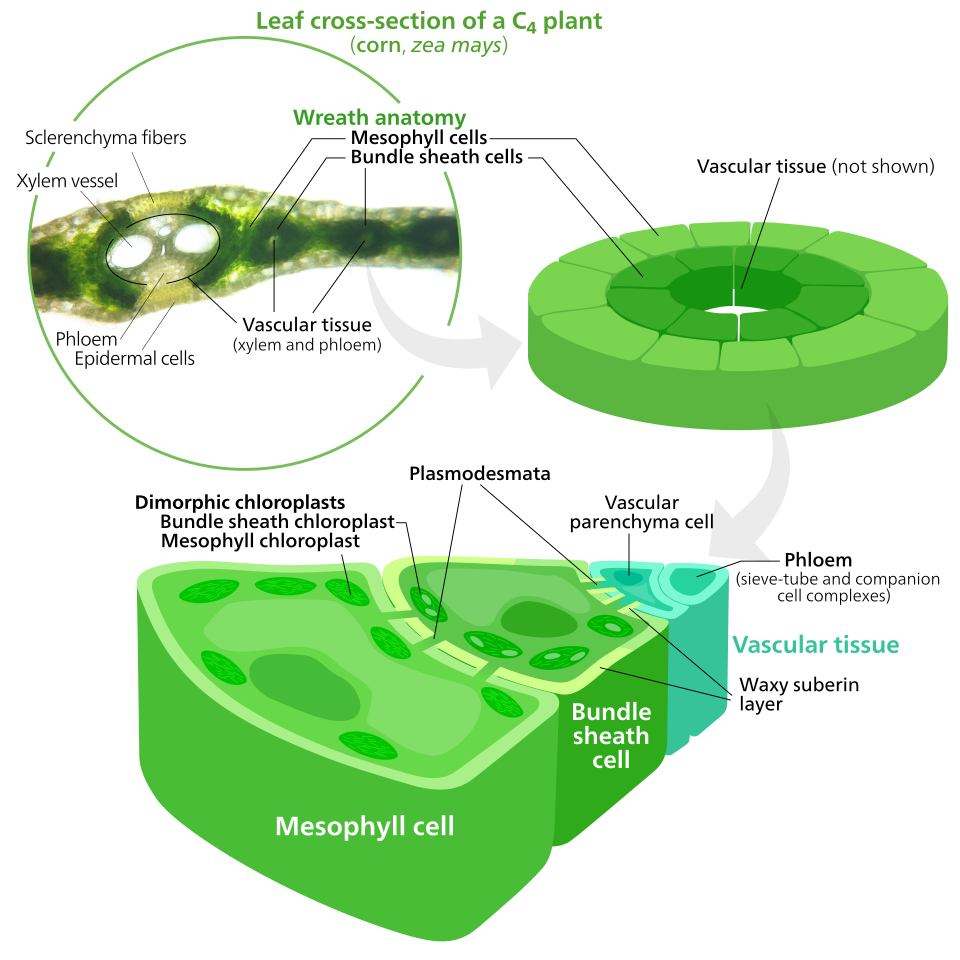
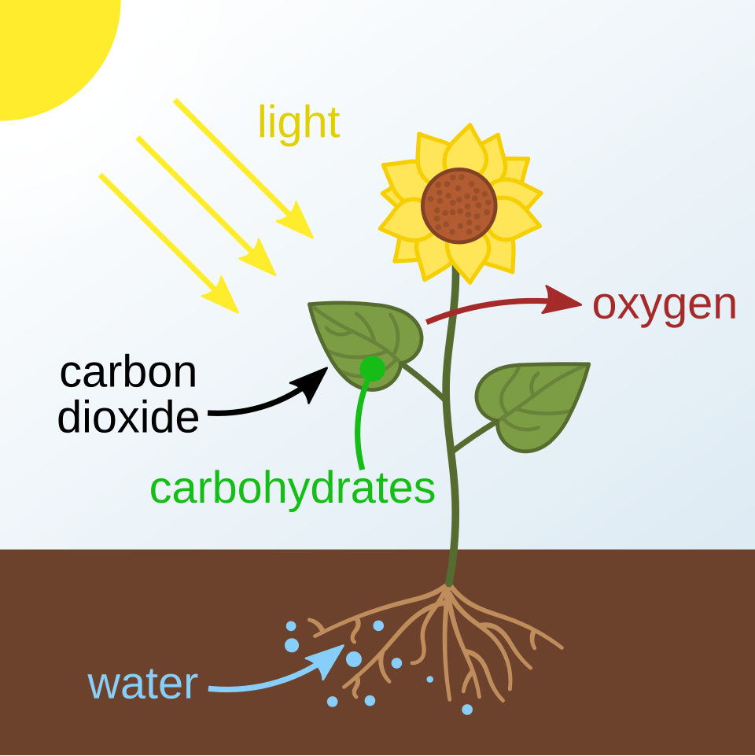
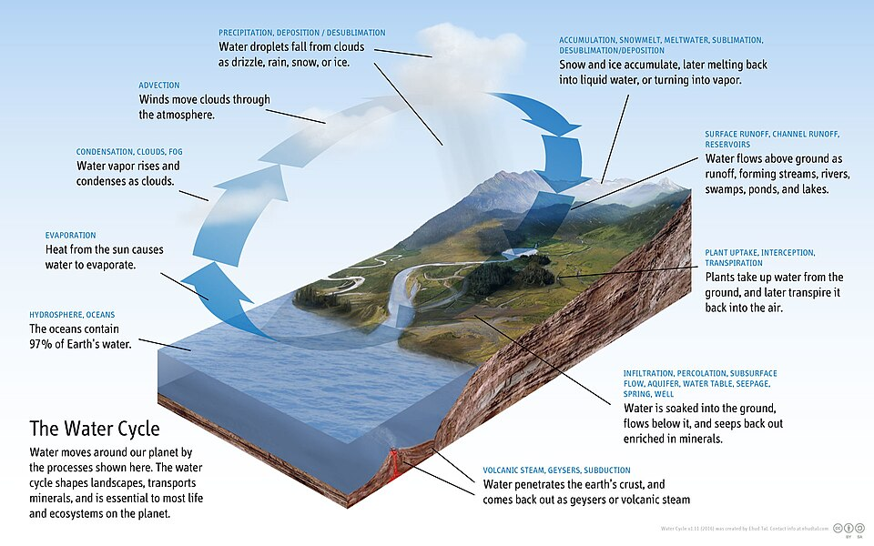
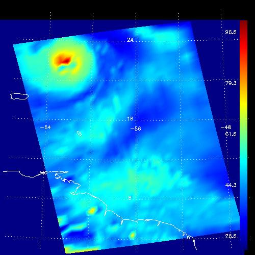

4 consultes, top 2 resultats cadascuna. Metadata (llicencia, autor) inclosa.
query: photosynthesis


query: water cycle diagram

query: industrial revolution factory 19th century
query: evaporation water vapor
